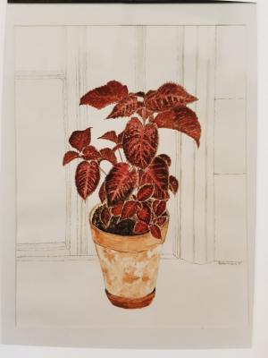

Started painting
Had work featured in my first exhibition in Clare, Suffolk
Sold my first painting; a watercolour of a Coleus plant
Exhibition in a gallery in Huddersfield, Yorkshire
Took part in Cambridge open studios
Opened my etsy shop
Reached 1000 sales on Etsy
I started painting in 1987. We had just moved into our first house, so we had wall space just waiting to be filled! My eldest son was a year old at the time, so I started experimenting with art in between looking after him. I began with pencil drawings, then felt brave enough to move onto watercolour. Over the years I have tried using gouache and acrylic, and while I enjoyed using them, I have found that watercolours are more versatile, and suit my artwork. I am too messy to use charcoal or pastels, and too impatient to use oils!
I started by painting flowers and still life, then painted houses, for our walls. I began receiving commissions from neighbours who wanted me to paint their houses too. I began selling paintings, and my sales increased as more friends, family and neighbours wanted to buy my work, or commission paintings from me.
The first painting I sold was at the first exhibition I was a part of, which took place in Clare, Suffolk in 1988. I submitted three paintings, and sold a watercolour of a Coleus plant. I have entered other exhibitions, and done a demonstration in a gallery and shop in Huddersfield, West Yorkshire. I exhibited paintings at the same time, and sold quite a few. This was while I was expecting my daughter, Olivia. There have been many other exhibitions over the years. I also exhibited my work at my local church for the flower festival several years running, where I would donate a percentage of the profits to the church. I took part in Open Studios in 2003, with my friend Heather Stowell, a silversmith. Visitors could come and view my our work in my studio at home. I have also worked with the local primary school on a number of occasions, including running a lunchtime art club where children who wished to take part could experience drawing, and painting with watercolours. My daughter suggested I opened an online shop to sell my cards, which I had noticed were always popular when I sold my work at craft fairs and other events. I opened an Etsy shop in 2012, with a focus on baby cards.
